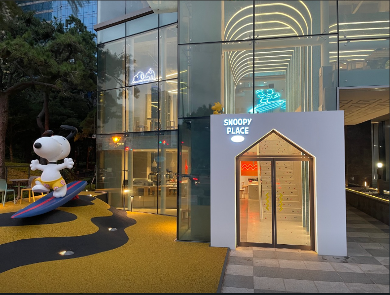

Trip
로그인
회원가입
서울
경복궁
광장시장
남산
롯데월드
DDP
강릉
맛집
군산
금강권
시간여행테마
고군산군도
개정/임피
부산
해운대
감천마을
광안리
해운대
부산
감천문화마을
광안리
맛집
가야밀면
(부산 해운대구 좌동순환로 27 해운대 가야밀면)
(지번: 좌동 1352-1)
해목 해운대점
(부산 해운대구 구남로 24번길 8)
(지번: 우동 542-30)
금수복국 해운대본점
(부산 해운대구 중동1로 43번길 23)
(지번: 중동 1394-65)



 금수복국 해운대본점
금수복국 해운대본점
금수복국 해운대본점
금수복국 해운대본점